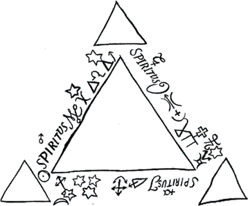

[1804]
Was nun die erste Gestalt des Systems angeht, so können wir uns von ihr nur eine unzureichende Vorstellung aus einigen sibyllinischen Trümmern machen, die sie zurückgelassen hat. Das Wahrscheinlichste ist, daß Hegel keinen dieser Versuche ganz zu Ende geführt hat, weil im Lauf der Arbeit die Unangemessenheit der Form der Vorstellung zu der des reinen Denkens zu groß ward. Doch ist noch ein bedeutendes Fragment übrig, welches vom göttlichen Dreieck handelt. Diese geometrisierende Vorstellungsweise war damals durch Franz Baader in seiner Schrift Über das Pythagoreische Quadrat oder die vier Weltgegenden, Tübingen 1798, wieder in Anregung gebracht. Auch der Philosoph der romantischen Schule, Jakob Böhme, war mit seinem Ternan wieder zu Ehren gekommen. Hegel ging in seiner Bildung auch durch diese Form hindurch. Indem er sie aber mit wissenschaftlichem Ernst durchdringen, nicht bloß an ihr mit mystischer Spielerei sich ergötzen wollte, mußte er sie nach ihrer geometrischen Bestimmtheit, als gerade nach dem, was das Eigentümlichste darin sein sollte, zugrunde richten. Es blieb demnach nichts übrig als der Begriff der sich dreifach von sich unterscheidenden Einheit. Hegels dialektischer Geist hatte an einem einfachen Dreieck nicht genug. Er konstruierte, das Leben der Idee auszudrücken, ein Dreieck von Dreiecken, welche er sich in der Weise durcheinander hindurchbewegen ließ, daß ein jedes nicht nur überhaupt einmal Extrem und einmal Mitte wurde, sondern daß es auch in sich mit jeder seiner Seiten diesen Prozeß durchmachen mußte. Um aber in dieser Härte und Kraßheit der Anschauung doch auch wieder die ideelle Weichheit der Einheit, die

Flüssigkeit der als Triangel und Seiten vorgestellten Unterschiede zu erhalten, ging er konsequent zu der weiteren Barbarei fort, die Totalität als über den Dreiecken und ihrem Prozeß ruhendes Viereck auszudrücken. Im Verfolg der Arbeit scheint er aber ermüdet zu sein; wenigstens bricht sie bei der Konstruktion des Tieres ab. Das Interessante dieses Fragments besteht vorzüglich in dem energischen Konflikt der Hölzernheit der Form mit der Lebendigkeit der Dialektik des Inhalts. Es mußte Hegel die Unmöglichkeit beweisen, das Wahrhafte in einer anderen als logischen Bestimmtheit für die Erkenntnis ohne Gewaltsamkeit und wüste Halbphantasie darzustellen.
Insofern war diese Arbeit für Hegel vielleicht die furchtbarste und zugleich fruchtbarste Anstrengung. Er hatte durch seine Arbeiten in Bern von der bittersten Empörung gegen die vielfachen Entstellungen des Christentums sich wieder bis zum Vertrauen zu ihm und seinen fundamentalen Vorstellungen durchgerungen. Er wollte nun die Dreieinigkeit im Dreieck der Dreiecke begreifen. Er wollte jetzt diejenige Vorstellung nicht als vernunftlos von sich weisen, in welcher der Glaube Jahrhunderte hindurch seinen höchsten Besitz verehrt hatte. Das Bekanntwerden mit den deutschen Mystikern des Mittelalters und ihrer tiefsinnigen Sprache steigerte diese Richtung. Schon am Ausgang der Schweizer Periode finden sich unter Hegels Papieren Exzerpte von Stellen aus Meister Eckart und Tauler, die er sich aus Literaturzeitungen abschrieb. Indem er aber in die Gnosis sich einließ, drängte ihm sich der Begriff des Geistes als derjenige entgegen, der, weil er der Totalbegriff ist, im Grunde allem Vorstellen entflieht. In der Sukzession der kirchlichen Vorstellungen sieht es zuerst so aus, als ob der Geist gegen Vater und Sohn, die ihn nach dem Ausdruck der Vorstellung hauchen, untergeordnet wäre. Allein die Kirche selbst hat ausdrücklich dem Geist die gleiche Selbständigkeit und Ewigkeit wie den beiden anderen sogenannten Personen der Gottheit zuerkannt. Der Geist erst ist die Einheit, ohne welche der Unterschied von Vater und Sohn sinnlos wäre oder, hätte er einen Sinn, zum Dualismus führen müßte. Hegel hat sich daher, um die Gegenseitigkeit der Vermittlung der Personen darzustellen, in den seltsamsten Ausdrücken umhergeworfen. Er bedient sich dabei auch der kirchlichen Form vom Reich des Vaters, Sohnes und Geistes, die er später in seiner Religionsphilosophie beibehielt. Liebe wäre nach ihm für den Begriff Gottes ein angemessenerer, verständlicherer Ausdruck, aber Geist sei tiefer.
"Im Sohn erkennt sich Gott als Gott. Er sagt zu sich selbst: Ich bin Gott. Das Insich hört auf, ein Negatives zu sein. Das Unterscheiden und der Reichtum des Selbstbewußtseins Gottes ist darin mit seiner Einfachheit ausgesöhnt und das Reich des Sohnes Gottes ganz auch das Reich des Vaters. Das Selbstbewußtsein Gottes ist nicht ein Insichhineinkehren und ein Anderssein des Sohnes, sowie nicht ein Anderssein des Insichhineinkehrens als der einfache Gott, sondern die Anschauung im Sohne ist das Anschauen desselben als seiner selbst, aber so, daß der Sohn Sohn bleibt, wie Nichtunterschiedenes und zugleich Unterschiedenes; oder das ausgebreitete Reich des Universums, das kein Fürsichsein mehr sich gegenüber hat, sondern dessen Fürsichsein ein Hineinkehren in den Gott ist, der Gottes Hineinkehren in sich ist, eine Freude über die Herrlichkeit des Sohnes, den er als sich selbst anschaut. Die Erde hört damit, daß ihr Insichsein nicht mehr das reine Fürsichsein, das Böse ist, auch auf, ein Vermischtes zu sein. Was dem Sohn, der die Erde anschaut, in seiner Herrlichkeit gegenübersteht, ist die Herrlichkeit Gottes selbst, der Rückblick und die Heimkehr zu ihm. Und für die geheiligte Erde ist dieses Selbstbewußtsein Gottes der Geist, der von Gott ausgeht und in welchem sie mit ihm und dem Sohne eins [ist]. Dieser Geist ist hier der ewige Mittler zwischen dem zum Vater zurückgekehrten Sohne, der jetzt ganz nur eins, und dem Sein des Sohnes in sich selbst oder der Herrlichkeit des Universums. Die Einfachheit des allumfassenden Geistes ist jetzt in die Mitte getreten, und es ist jetzt kein Unterscheiden mehr; denn die Erde ist als das Selbstbewußtsein Gottes nunmehr der Geist, sie ist aber auch der ewige Sohn, den Gott als sich selbst anschaut, und beides ist eine Einheit und das Erkennen Gottes in sich selbst. So hat sich das heilige Dreieck der Dreiecke geschlossen. Das erste ist die Idee Gottes, welche in den anderen Dreiecken ausgeführt wird und durch sie hindurch in sich selbst zurückkehrt."
"In diesem ersten, das zugleich nur eine Seite des absoluten einigen Dreiecks ist, ist nur die Gottheit mit sich selbst in Wechselanschauung und Erkennen. Es ist ihre Idee, in der das reine Licht der Einheit die Mitte ist und deren Seite ebenso das reine Herausstrahlen und das reine Zurückbeugen der Strahlen in sich selbst."
"In dem zweiten ist Gottes Anschauen auf die eine Seite getreten. Er ist mit Bösem in Beziehung getreten, und die Mitte ist das Schlechte der Vermischung beider. Aber dieses Dreieck wird ein Viereck, indem die reine Gottheit über ihm schwebt. Sein Unglück läßt ihm aber auch so nicht zu, dieses Dreieck zu bleiben, sondern es muß umschlagen in sein Entgegengesetztes, der Sohn durch die Erde hindurchgehen, das Böse überwinden und, indem er als Sieger auf die eine Seite tritt, die andere das Selbsterkennen Gottes als ein neues mit Gott eins seiendes Erkennen, als den Geist Gottes, erwecken: wodurch die Mitte eine schöne, freie, göttliche Mitte, das Universum Gottes wird. - Dieses zweite Dreieck ist, als in der Trennung seiend, hiermit selbst ein zweifaches Dreieck, oder seine zwei Seiten sind jede ein Dreieck, das eine das umgekehrte des andern, und die Mitte ist in dieser Bewegung der Geschichte die alles wirkende Kraft der absoluten Einheit, die über dem ersten schwebt und dieses in sich aufnimmt und in sich zu einem anderen verwandelt. Was aber sichtbar ist, das sind die beiden Dreiecke, die Mitte aber ist nur die unsichtbare im Innern wirkende Macht."
"Aber durch das zweite Dreieck des zweiten hat sich das dritte unmittelbar gebildet, die Rückkehr von Allem in Gott selbst, oder das Ausgegossensein der Idee über Alles. Was nur eine Vermischung war, ist durch diesen Geist absolut eins mit Gott, und wie er sich in ihm erkennt, so erkennt es sich in Gott."
Diese trianguläre Konstruktion ist nun von Hegel im Speziellen noch durch die Natur hindurchgeführt, jedoch mit häufigem Verlassen der vorausgesetzten Vorstellung und mit eigentümlicher Mischung rein logischer und bildhafter Bezeichnungen. Die Sonne wird die negative Einheit ihres Systems genannt. Die Erde soll den Gegensatz von Luft und Wasser erzeugen, und zwar so, daß sie nicht faul auseinandertreten, sondern daß sie das Entgegengesetzte an sich selbst ausdrücken und sich zerstören, die Luft sich mit Wasser, das Wasser sich mit Luft mästet und zugleich dadurch beide so gespannt werden, daß sie auf den Sprung kommen, jedes in sein Entgegengesetztes überzugehen usw. - Auch noch in späteren Jahren bediente Hegel sich zuweilen des triangulären Schemas.